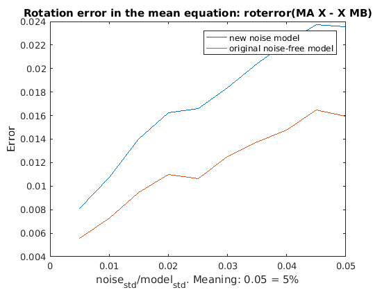
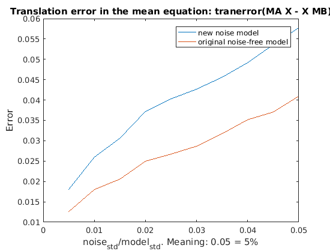
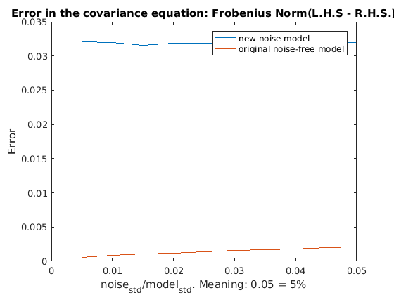

Contents
% This main fucntion tests the new idea for handling noise by using the % distribution as a priori known information % clear; clc; close all;
Add file dependencies
addpath ../../../rvctools/robot addpath ../../../rvctools/common addpath ../../../kinematics/kinematics/screws addpath ../../../kinematics/kinematics/util addpath ../../../kinematics/kinematics/lie_group addpath ../../../axxb_calibration/matlab/new_mean/codegen/mex/distibutionPropsMex
Initialize Parameters
num = 50; % number of samples in a cloud gmean = [0;0;0;0;0;0]; %Gaussian Noise Mean cov = eye(6,6); std = 0.1; % std for generating the noise-free sample cloud ratio_std = 0.005:0.005:0.05; % noise level 0.5% - 5% on std nstd = ratio_std*std; % Gaussian Noise standard deviation Range n_trials = 2; %60 x = randn(6,1); x = x./norm(x); X = expm(se3_vec(x)); % Generate a Random X noiseModel = 2; % Select the noise model which has zero mean and nstd as the % standard deviation on lie aglebra optPDF = 1; % Select the distribution for generating {A} and {B} sample cloud. % They will have zero mean and std as the standard deviation in % lie algebra
Data Initialization
For simplicity, we only apply noise onto {A}
A_noise = zeros(4, 4, num); % A with noise B = zeros(4, 4, num); % B will be kept noise free Ainv_noise = zeros(4, 4, num); % Calculate {A^-1} rotErr1 = []; tranErr1 = []; covErr1 = []; covErr1Rot = []; rotErr2 = []; tranErr2 = []; covErr2 = []; covErr2Rot = []; covX1Err = []; meanX1Err = [];
Apply noise on Ai only
for m = 1:length(nstd) for k = 1: 200
% Generate num samples of A and B given the ground truth X, % type of distribution optPDF, mean gmean and covariance std*cov [A, B] = generateAB(num, optPDF, X, gmean, std*cov); % Apply noise onto A A_noise = sensorNoise(A, gmean, nstd(m), noiseModel); % Compute the mean and covariance of A_noise [a1,a2,a3] = size(A_noise); A_mex = reshape(A_noise, a1, a2*a3); [MeanA_noise, SigA_noise] = distibutionPropsMex_mex(A_mex); % Compute the mean and covariance of noise-free B B_mex = reshape(B, a1, a2*a3); [MeanB, SigB] = distibutionPropsMex_mex(B_mex); % Compute adjoint matrix of Xinv and MeanBinv adXinv = SE3inv_Ad(X); adBinv = SE3inv_Ad(MeanB); % Lie algebra basis E1(:,:,1)=[0 0 0 0; 0 0 -1 0; 0 1 0 0; 0 0 0 0]; E1(:,:,2)=[0 0 1 0; 0 0 0 0; -1 0 0 0; 0 0 0 0]; E1(:,:,3)=[0 -1 0 0; 1 0 0 0; 0 0 0 0; 0 0 0 0]; E1(:,:,4)=[0 0 0 1; 0 0 0 0; 0 0 0 0; 0 0 0 0]; E1(:,:,5)=[0 0 0 0; 0 0 0 1; 0 0 0 0; 0 0 0 0]; E1(:,:,6)=[0 0 0 0; 0 0 0 0; 0 0 0 1; 0 0 0 0]; % ------ Compute the covariance of the noise correcting term ------ % n_A_prime namely, { exp(\sum (nj Ai Ej Ai^-1)) } N_A_prime = zeros(4, 4, num); for i = 1:a3 temp_se3 = zeros(4,4); % Generate a sample of Lie algebra using zero mean and nstd(m)*cov % as the covariance lie_algebra = mvg(gmean, nstd(m)*cov, 1); % Assume the noise is really small and use measured data % A_noise to replace the noise-free data A for j = 1:6 temp_se3 = temp_se3 + lie_algebra(j)*A_noise(:,:,i)*E1(:,:,j)/A_noise(:,:,i); end N_A_prime(:,:,i) = expm(temp_se3); end % ----------------------------------------------------------------- % Calculate the mean and covariance of the noise correcting term N_A_mex = reshape(N_A_prime, a1, a2*a3); [MeanN_A_prime, SigN_A_prime] = distibutionPropsMex_mex(N_A_mex); % Compute the mean and covariance of the inverse of A_noise for s = 1: a3 Ainv_noise(:,:,s) = inv(A_noise(:,:,s)); end Ainv_mex = reshape(Ainv_noise, a1, a2*a3); [MeanAinv_noise, SigAinv_noise] = distibutionPropsMex_mex(Ainv_mex);
Verification of the mean and covariance equations
------- Mean Equation Error Analysis ------- % Rotation error of the new model
rotErr1(k,m) = roterror(MeanA_noise*X, MeanN_A_prime*X*MeanB);
% Translation error of the new model
tranErr1(k,m) = tranerror(MeanA_noise*X, MeanN_A_prime*X*MeanB);
% Rotation error of the no-noise model
rotErr2(k,m) = roterror(MeanA_noise*X, X*MeanB);
% Translation error of the no-noise model
tranErr2(k,m) = tranerror(MeanA_noise*X, X*MeanB);
% ------- Covariance Equation Error Analysis ------- %
% Covariance error of the new model
covDiff1 = adXinv*SigA_noise*adXinv' - adBinv*adXinv*SigN_A_prime*adXinv'*adBinv' + SigB;
covErr1(k,m) = norm(covDiff1, 'fro');
% Covariance error of the noise-free model
covDiff2 = adXinv*SigA_noise*adXinv' - SigB;
covErr2(k,m) = norm(covDiff2, 'fro');
% covX1 = adBinv*adXinv*SigAinv_noise*adXinv'*adBinv' + SigB;
% covX1Err(k,m) = norm(covX1, 'fro');
%
% meanX1 = X - MeanAinv_noise*X*MeanB;
% meanX1Err(k,m) = norm(meanX1, 'fro');
% covariance
end end
figure plot(ratio_std, mean(rotErr1, 1)) hold on plot(ratio_std, mean(rotErr2, 1)) legend('new noise model','original noise-free model') xlabel('noise_{std}/model_{std}. Meaning: 0.05 = 5%') ylabel('Error') title('Rotation error in the mean equation: roterror(MA X - X MB)') figure plot(ratio_std, mean(tranErr1, 1)) hold on plot(ratio_std, mean(tranErr2, 1)) legend('new noise model','original noise-free model') xlabel('noise_{std}/model_{std}. Meaning: 0.05 = 5%') ylabel('Error') title('Translation error in the mean equation: tranerror(MA X - X MB)') figure plot(ratio_std, mean(covErr1, 1)) hold on plot(ratio_std, mean(covErr2, 1)) legend('new noise model','original noise-free model') xlabel('noise_{std}/model_{std}. Meaning: 0.05 = 5%') ylabel('Error') title('Error in the covariance equation: Frobenius Norm(L.H.S - R.H.S.)')  
fprintf('Rotation error of the noise correction method is %d \n', mean(rotErr1, 1)); fprintf('Translation error of the noise correction method is %d \n', mean(tranErr1, 1)); fprintf('Rotation error of the normal method is %d \n', mean(rotErr2, 1)); fprintf('Translation error of the normal method is %d \n', mean(tranErr2, 1)); fprintf('##-----------------------------------------------------## \n') fprintf('Norm of covariance difference for the noise correction method is %d \n', mean(covErr1, 1)); fprintf('Norm of covariance difference is %d \n', mean(covErr2, 1)); fprintf('##-----------------------------------------------------## \n')
Rotation error of the noise correction method is 8.119667e-03 Rotation error of the noise correction method is 1.073701e-02 Rotation error of the noise correction method is 1.398092e-02 Rotation error of the noise correction method is 1.625891e-02 Rotation error of the noise correction method is 1.661829e-02 Rotation error of the noise correction method is 1.834305e-02 Rotation error of the noise correction method is 2.042868e-02 Rotation error of the noise correction method is 2.222981e-02 Rotation error of the noise correction method is 2.373309e-02 Rotation error of the noise correction method is 2.353192e-02 Translation error of the noise correction method is 1.810542e-02 Translation error of the noise correction method is 2.599373e-02 Translation error of the noise correction method is 3.053538e-02 Translation error of the noise correction method is 3.728473e-02 Translation error of the noise correction method is 4.024679e-02 Translation error of the noise correction method is 4.269150e-02 Translation error of the noise correction method is 4.558639e-02 Translation error of the noise correction method is 4.920470e-02 Translation error of the noise correction method is 5.352657e-02 Translation error of the noise correction method is 5.775197e-02 Rotation error of the normal method is 5.550455e-03 Rotation error of the normal method is 7.258269e-03 Rotation error of the normal method is 9.485248e-03 Rotation error of the normal method is 1.101411e-02 Rotation error of the normal method is 1.064974e-02 Rotation error of the normal method is 1.252263e-02 Rotation error of the normal method is 1.374080e-02 Rotation error of the normal method is 1.477382e-02 Rotation error of the normal method is 1.650358e-02 Rotation error of the normal method is 1.597227e-02 Translation error of the normal method is 1.262789e-02 Translation error of the normal method is 1.803892e-02 Translation error of the normal method is 2.047413e-02 Translation error of the normal method is 2.493527e-02 Translation error of the normal method is 2.674216e-02 Translation error of the normal method is 2.872414e-02 Translation error of the normal method is 3.170920e-02 Translation error of the normal method is 3.517425e-02 Translation error of the normal method is 3.710820e-02 Translation error of the normal method is 4.083126e-02 ##-----------------------------------------------------## Norm of covariance difference for the noise correction method is 3.205548e-02 Norm of covariance difference for the noise correction method is 3.199367e-02 Norm of covariance difference for the noise correction method is 3.154694e-02 Norm of covariance difference for the noise correction method is 3.182706e-02 Norm of covariance difference for the noise correction method is 3.186396e-02 Norm of covariance difference for the noise correction method is 3.205745e-02 Norm of covariance difference for the noise correction method is 3.213533e-02 Norm of covariance difference for the noise correction method is 3.222354e-02 Norm of covariance difference for the noise correction method is 3.201090e-02 Norm of covariance difference for the noise correction method is 3.201637e-02 Norm of covariance difference is 5.964987e-04 Norm of covariance difference is 8.765385e-04 Norm of covariance difference is 1.078471e-03 Norm of covariance difference is 1.229829e-03 Norm of covariance difference is 1.409661e-03 Norm of covariance difference is 1.546075e-03 Norm of covariance difference is 1.719457e-03 Norm of covariance difference is 1.840172e-03 Norm of covariance difference is 1.951779e-03 Norm of covariance difference is 2.100953e-03 ##-----------------------------------------------------##